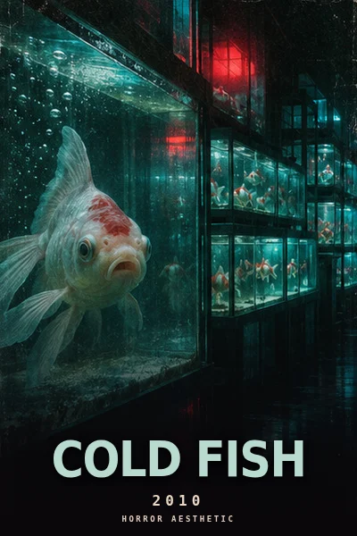

Холодная рыбаCold Fish (2010)
Режиссёр: Сион Соно · J-Horror, Триллер, ЭкстримDirector: Sion Sono · J-Horror, Thriller, Extreme
⚠ Жестокие сцены расчлененияBrutal scenes of dismemberment
Тихий хозяин магазина рыбок попадает под власть обаятельного убийцы.A meek tropical-fish shop owner falls under the spell of a charming killer.
Сямото держит маленький магазин тропических рыб и боится сказать лишнее слово. Однажды он знакомится с Мурато, владельцем огромного рыбного центра, радушным и громким, и принимает его помощь. Через час он уже соучастник.
Сион Соно строит историю на разнице двух характеров: один молчит, другой подавляет. Дэнден в роли Мурато играет так, что хочется отвернуться и невозможно оторваться.
Фильм основан на реальном деле, на убийствах заводчиков собак в префектуре Сайтама в 1993 году, но превращает его в притчу о семье и бессилии. Кровавые сцены здесь тяжёлые и длинные, и они нужны, чтобы показать цену молчания.
Это почти два с половиной часа тяжёлого кино, не для слабонервных. Тем, кто выдержит, оно запомнится надолго.
Shamoto runs a small tropical-fish shop and is afraid to say a word out of place. One day he meets Murata, the owner of a huge fish centre, warm and loud, and accepts his help. An hour later he is an accomplice.
Sion Sono builds the story on the contrast of two characters: one stays silent, the other dominates. Denden as Murata plays so that you want to look away and cannot.
The film is based on a real case, the 1993 murders of dog breeders in Saitama Prefecture, but turns it into a parable about family and helplessness. The bloody scenes here are heavy and long, and they exist to show the price of silence.
It is almost two and a half hours of difficult cinema, not for the faint-hearted. For those who endure it, it stays in memory for a long time.